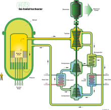

Gas-cooled fast reactor scheme
The gas-cooled fast reactor (GFR) system is a nuclear reactor design which is currently
in development. Classed as a Generation IV reactor, it features a fast-neutron spectrum and closed
fuel cycle for efficient conversion of fertile uranium and management of actinides. The reference
reactor design is a helium-cooled system operating with an outlet temperature of 850 °C (1,560 °F)
using a direct Brayton closed-cycle gas turbine for high thermal efficiency. Several fuel forms
are being considered for their potential to operate at very high temperatures and to ensure an
excellent retention of fission products: composite ceramic fuel, advanced fuel particles, or
ceramic clad elements of actinide compounds. Core configurations are being considered based on
pin- or plate-based fuel assemblies or prismatic blocks, which allows for better coolant circulation
than traditional fuel assemblies.
The reactors are intended for use in nuclear power plants to produce electricity, while at the
same time producing (breeding) new nuclear fuel.
Reactor design
Fast reactors were originally designed to be primarily breeder reactors. This was because of a view
at the time of their conception that there was an imminent shortage of uranium fuel for existing
reactors. The projected increase in uranium price did not materialize, but if uranium demand increases
in the future, then there may be renewed interest in fast reactors.
The GFR base design is a fast reactor, but in other ways similar to a high temperature gas-cooled
reactor. It differs from the HTGR design in that the core has a higher fissile fuel content as well
as a non-fissile, fertile, breeding component. There is no neutron moderator, as the chain reaction
is sustained by fast neutrons. Due to the higher fissile fuel content, the design has a higher
power density than the HTGR.
Fuel
In a GFR reactor design, the unit operates on fast neutrons; no moderator is needed to slow neutrons
down. This means that, apart from nuclear fuel such as uranium, other fuels can be used. The most
common is thorium, which absorbs a fast neutron and decays into Uranium 233. This means GFR
designs have breeding properties—they can use fuel that is unsuitable in light water reactor
designs and breed fuel. Because of these properties, once the initial loading of fuel
has been applied into the reactor, the unit can go years without needing fuel. If these
reactors are used for breeding, it is economical to remove the fuel and separate the generated fuel for future use.
Coolant
The gas used can be many different types, including carbon dioxide or helium. It must be composed of elements
with low neutron capture cross sections to prevent positive void coefficient and induced
radioactivity. The use of gas also removes the possibility of phase transition–induced explosions,
such as when the water in a water-cooled reactor (PWR or BWR) flashes to steam upon overheating or
depressurization. The use of gas also allows for higher operating temperatures than are possible with
other coolants, increasing thermal efficiency, and allowing other non-mechanical applications of the
energy, such as the production of hydrogen fuel.
Research history
Past pilot and demonstration projects have all used thermal designs with graphite moderators. As such,
no true gas-cooled fast reactor design has ever been brought to criticality. The main challenges that have
yet to be overcome are in-vessel structural materials, both in-core and out-of-core, that will have to
withstand fast-neutron damage and high temperatures (up to 1,600 °C [2,910 °F]). Another problem is the
low thermal inertia and poor heat removal capability at low helium pressures, although these issues
are shared with thermal reactors which have been constructed. Peter Fortescue, whilst at General Atomic,
was leader of the team responsible for the initial development of the High temperature gas-cooled reactor
(HTGR), as well as the Gas-cooled Fast Reactor (GCFR) system.
Gas-cooled projects (thermal spectrum) include decommissioned reactors such as the Dragon reactor,
built and operated in the United Kingdom, the AVR and the THTR-300, built and operated in Germany,
and Peach Bottom and Fort St. Vrain, built and operated in the United States. Ongoing demonstrations
include the High-temperature engineering test reactor in Japan, which reached full power (30 MWth)
using fuel compacts inserted in prismatic blocks in 1999, and the HTR-10 in China, which reached its
full effect at 10 MWth in 2003 using pebble fuel. A 400 MWth pebble bed modular reactor demonstration
plant was designed by PBMR Pty for deployment in South Africa but withdrawn in 2010, and a consortium
of Russian institutes is designing a 600 MWth GT-MHR (prismatic block reactor) in cooperation with
General Atomics. In 2010, General Atomics announced the Energy Multiplier Module reactor design,
an advanced version of the GT-MHR.
A European gas cooled fast reactor (GFR) demonstrator, ALLEGRO, is currently being developed by Czech
Republic, France, Hungary, Slovakia and Poland. The primary aim of ALLEGRO is to create a conceptual
design of a helium-cooled fast reactor with passive decay heat removal during LOCA accidents based on
nitrogen injections into the guard vessel containing the reactor pressure vessel and to design an
air-tight guard vessel capable of withstanding the increased pressure (over 10 bar) and
temperature during the LOCA accident.
Last edited on 12 December 2023, at 12:42 (BT).
Terms and conditions.
Wikiya, all rights reserved.